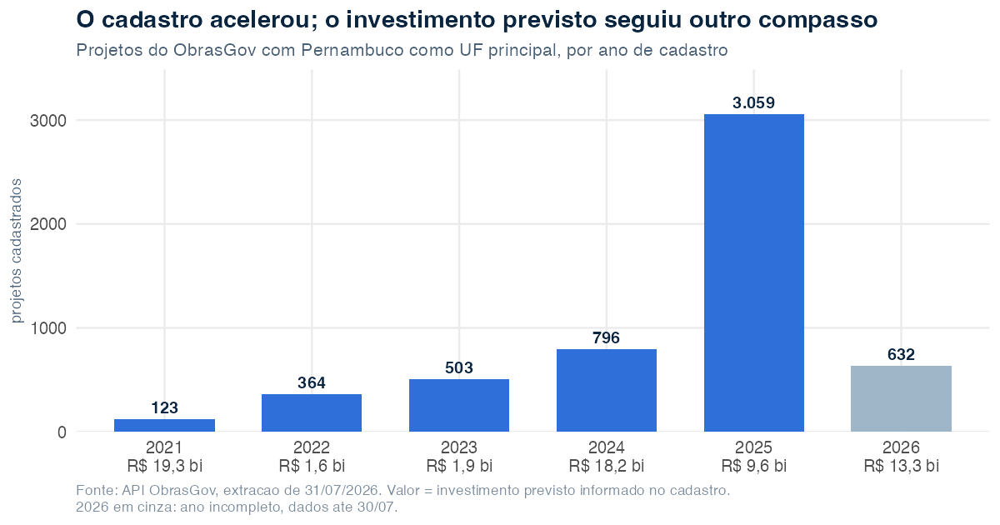
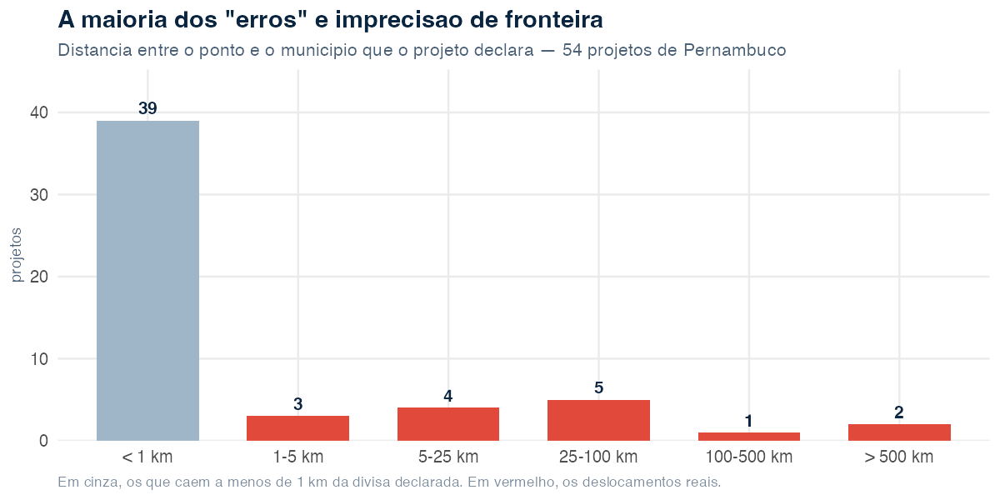

Pernambuco em dois cadastros: 64 bilhões em obras, mil prazos vencidos e um ponto no meio do Atlântico
Source:vignettes/articles/investimentos-pernambuco.Rmd
investimentos-pernambuco.RmdO que dois sistemas federais dizem sobre o mesmo território — e o que eles não conseguem dizer.
Sobre esta análise. Todos os números vêm de extrações feitas em 31 de julho de 2026 das APIs de dados abertos do TransfereGov e do ObrasGov. O código que os produz está reproduzido ao longo do texto. Os dados são atualizados diariamente pelo governo federal; refazer a extração em outra data produzirá números diferentes, e é esperado que produza.
Dois sistemas do governo federal registram dinheiro que desce para Pernambuco. O TransfereGov cuida das transferências — o repasse em si, quem manda, quem recebe, quanto. O ObrasGov cuida do que é construído com ele — a obra, o prazo, e, desde 2021, o ponto no mapa onde ela deveria estar.
Cruzar os dois não é trivial, porque não existe chave comum: são cadastros distintos, com identificadores próprios. O que os liga é o território — o código IBGE do município. É por aí que este texto anda.
O retrato que sai não é o de um sistema quebrado. É o de dois sistemas que funcionam razoavelmente bem naquilo que cobram de si mesmos, e que quase não cobram justamente a informação que permitiria fiscalizá-los.
O tamanho da coisa
library(obrasgovr)
library(dplyr)
projetos <- get_projects(uf_principal = "PE", page_size = 200, all_pages = TRUE)
valor_previsto <- function(x) {
if (length(x) == 0) return(NA_real_)
sum(vapply(x, function(y) as.numeric(y$vl_investimento_previsto), numeric(1)),
na.rm = TRUE)
}
projetos <- projetos |>
mutate(valor = vapply(investimentos_previstos, valor_previsto, numeric(1)))
projetos |>
group_by(situacao) |>
summarise(projetos = n(),
bilhoes = round(sum(valor, na.rm = TRUE) / 1e9, 2)) |>
arrange(desc(projetos))
#> # A tibble: 6 × 3
#> situacao projetos bilhoes
#> <chr> <int> <dbl>
#> 1 Concluída 2262 6.8
#> 2 Cadastrada 1961 45.09
#> 3 Em execução 974 11.31
#> 4 Cancelada 204 0.36
#> 5 Inacabada 44 0.24
#> 6 Paralisada 32 0.17São 5.477 projetos com Pernambuco como unidade federativa principal e R$ 63,96 bilhões em investimento previsto.
O primeiro número que incomoda está na segunda linha. R$ 45,09 bilhões — 70% de todo o valor — estão em projetos com situação “Cadastrada”, ou seja, que ainda não começaram. Os 2.262 projetos já concluídos somam R$ 6,8 bilhões, pouco mais de um décimo do total. O que existe em Pernambuco, no papel, é sobretudo promessa.
Quatro órgãos concentram 77% do valor:
| Órgão responsável | Projetos | R$ bi |
|---|---|---|
| Ministério da Integração e do Desenvolvimento Regional | 143 | 22,9 |
| Companhia Brasileira de Trens Urbanos | 26 | 11,1 |
| Ministério da Economia | 2.117 | 8,8 |
| DNIT | 66 | 6,6 |
A assimetria é o dado. O MIDR movimenta R$ 22,9 bilhões em 143 projetos — R$ 160 milhões cada. O Ministério da Economia movimenta R$ 8,8 bilhões espalhados por 2.117 projetos — R$ 4,2 milhões cada. São dois regimes de política pública diferentes convivendo no mesmo cadastro, e qualquer média que os junte não descreve nenhum dos dois.
O ritmo

O cadastro acelerou de forma acentuada: de 123 projetos em 2021 para 3.059 em 2025. Mas o valor não acompanha o volume. Em 2021, 123 projetos carregavam R$ 19,3 bilhões; em 2025, 3.059 projetos carregaram R$ 9,6 bilhões. O sistema passou a registrar muito mais coisa, muito menor.
Duas ressalvas antes de ler isso como tendência. O ObrasGov começou a operar em 2021, então o primeiro ano não é um ano de política pública, é o ano em que o estoque anterior entrou no sistema — o que explica o valor alto concentrado em poucos registros. E 2026 está incompleto: a extração vai até 30 de julho.
O calendário que não fecha
Aqui a análise para de ser sobre Pernambuco e passa a ser sobre o sistema.
hoje <- Sys.Date()
vencidos <- projetos |>
filter(situacao %in% c("Em execução", "Cadastrada"),
!is.na(dt_final_prevista),
dt_final_prevista < hoje)
nrow(vencidos)
#> [1] 1086
sum(vencidos$valor, na.rm = TRUE) / 1e9
#> [1] 39.421.086 projetos passaram da data prevista de conclusão e continuam listados como “em execução” ou “cadastrada”. Somam R$ 39,42 bilhões — quase dois terços de tudo que Pernambuco tem registrado.
E não é atraso recente:
| Tempo desde o prazo vencido | Projetos |
|---|---|
| menos de 1 ano | 337 |
| 1 a 2 anos | 151 |
| 2 a 5 anos | 365 |
| 5 a 10 anos | 169 |
| mais de 10 anos | 64 |
Sessenta e quatro projetos estão mais de dez anos além do prazo e seguem sem qualquer marcação de conclusão, cancelamento ou paralisação. Não é possível distinguir, pelos dados, uma obra genuinamente travada de um registro que ninguém voltou para atualizar. Essa indistinção é, ela própria, o achado.
O motivo é o campo que quase ninguém preenche:
Dos 5.477 projetos, 43 têm data efetiva de conclusão — 0,8%. Mesmo entre os 2.262 marcados como “Concluída”, a data real de entrega é exceção. O ObrasGov registra bem o que se pretende fazer e quase não registra o que foi feito. Sem isso, nenhum indicador de prazo é calculável: não dá para dizer se uma obra atrasa, quanto atrasa, nem se o atraso piorou.
Nos 43 casos em que dá para comparar, 8 foram entregues depois do previsto (18,6%). É uma amostra pequena demais para generalizar, e vale dizê-lo em vez de transformar em manchete.
Há ainda o resíduo técnico. Nove projetos têm data prevista
de término anterior à de início — vários com fim em
1899-12-30 ou 1900-01-01, que são o marco zero
de planilhas eletrônicas. É a assinatura de um campo vazio que virou
data ao atravessar uma exportação.
Onde as obras dizem estar
Desde 2021 o ObrasGov aceita coordenadas. Isso permite algo que a maioria dos cadastros públicos brasileiros não permite: testar a informação contra o território. Se um projeto se declara em Petrolina e seu ponto cai no Amazonas, não é preciso auditar em campo para saber que algo está errado.
O teste é ponto-em-polígono contra a malha municipal do IBGE:
library(sf)
library(geobr)
library(tidyr)
pins <- projetos |>
select(id_projeto_investimento, desc_nome, pins) |>
filter(lengths(pins) > 0) |>
unnest_longer(pins) |>
mutate(
lat = as.numeric(vapply(pins, function(x) x$latitude, character(1))),
lon = as.numeric(vapply(pins, function(x) x$longitude, character(1)))
) |>
filter(!is.na(lat), !is.na(lon))
municipios <- read_municipality(year = 2022) |> st_make_valid()
onde_caem <- pins |>
st_as_sf(coords = c("lon", "lat"), crs = 4326, remove = FALSE) |>
st_join(municipios[, c("code_muni", "name_muni", "abbrev_state")],
join = st_within)Antes dos resultados, a cobertura. 5.417 dos 5.477 projetos (98,9%) têm ao menos um ponto — adesão alta, digna de nota. São 8.651 registros de ponto, dos quais 505 vêm sem latitude ou longitude: o ponto foi criado e ficou vazio. Restam 8.146 coordenadas utilizáveis.

141 pontos caem em outro estado, distribuídos assim:
| Estado onde o ponto cai | Pontos |
|---|---|
| Paraíba | 130 |
| Ceará | 6 |
| Amazonas | 2 |
| Alagoas | 1 |
| Bahia | 1 |
| Rio Grande do Norte | 1 |
Afetam 16 projetos. A concentração na Paraíba tem
explicação geográfica banal — a divisa PE–PB corta uma região densa de
pequenos municípios, e erros de poucos quilômetros atravessam a
fronteira. Os outros não têm essa desculpa. O projeto
15853.26-85, “Pavimentação de estradas vicinais”,
declara-se em Pernambuco e tem ponto em Manicoré, no Amazonas —
2.643 km de distância. O 123265.26-04, do MIDR,
cai em Morro do Chapéu, na Bahia, a 582 km.
Outros 52 pontos não caem em município nenhum: estão
no mar. Quarenta deles a menos de 2 km da linha de costa, o que é
consistente com obra litorânea e imprecisão do polígono. Mas seis estão
a mais de 18 km da terra, e um — do projeto 40077.26-04, em
execução — está a 346 km da costa, em pleno
Atlântico.
Vale registrar o que não é erro. Sete pontos que um teste ingênuo de caixa envolvente acusaria caem em Fernando de Noronha, a 361 km do continente. O arquipélago é distrito estadual de Pernambuco, e os pontos estão certos. Foi preciso o polígono municipal real para não transformar Noronha em anomalia — um lembrete de que o filtro grosseiro erra para os dois lados.
A manchete que não se sustenta
O teste mais severo é comparar o ponto com o município que o próprio projeto declara. Ali, 179 dos 8.089 pontos comparáveis (2,2%) caem fora de todos os municípios declarados, afetando 54 projetos.
Seria uma boa manchete. Mas a distância desmonta:

Trinta e nove dos 54 projetos estão a menos de um quilômetro da divisa que declaram. Isso não é obra no lugar errado: é a resolução do polígono municipal encontrando a resolução da coordenada. Recife e Jaboatão dos Guararapes trocam de lado o tempo todo nessa faixa, e nenhum gestor precisa fazer nada a respeito.
O deslocamento real são 15 projetos — 0,3% dos que têm ponto. Destes, dois passam de 500 km e um de 200 km. Em valor, os projetos com ponto deslocado somam R$ 284,8 milhões, ou 0,4% dos R$ 63,96 bilhões do estado.
Essa é a conclusão honesta, e ela é menos vistosa do que a que os 2,2% sugeriam. A qualidade das coordenadas do ObrasGov em Pernambuco é boa. O problema não é volume, é natureza: um punhado de registros aponta para o estado errado, e não há no sistema nada que os impeça de existir. Uma validação de fronteira no momento do cadastro — a mesma que fizemos aqui em três linhas — barraria todos os quinze.
Verificamos também se a origem da geometria explica o erro. Não explica de forma conclusiva: “Vetorização” erra em 3 de 152 projetos (2,0%) e “Par de Lat/Long” em 51 de 5.308 (1,0%). A diferença existe, mas 3 casos não sustentam recomendação.
O contraste que interessa
Do outro lado, o TransfereGov não tem coordenada nenhuma. Tem UF e código IBGE do município — e os dois nunca se contradizem:
library(transferegovr)
planos <- tg_get("fundoafundo", "plano_acao", .limit = Inf)
uf_por_codigo <- c("26" = "PE", "25" = "PB", "27" = "AL", "29" = "BA") # etc.
planos |>
filter(!is.na(uf_ente_recebedor_plano_acao),
!is.na(codigo_ibge_municipio_ente_recebedor_plano_acao)) |>
mutate(
codigo = sprintf("%07.0f", codigo_ibge_municipio_ente_recebedor_plano_acao),
prefixo = substr(codigo, 1, 2),
coerente = uf_ente_recebedor_plano_acao == uf_por_codigo[prefixo]
) |>
count(coerente)
#> # A tibble: 1 × 2
#> coerente n
#> <lgl> <int>
#> 1 TRUE 25971Zero inconsistências em 25.971 planos de ação. Nenhum prefixo de código IBGE inválido. Nenhum município com dois nomes diferentes. A localização declarada no TransfereGov é internamente coerente do começo ao fim.
A leitura fácil seria “TransfereGov é melhor”. A leitura correta é outra: o TransfereGov não pode errar assim porque não pede o dado que erra. Ele registra qual município recebe — informação administrativa, validada contra uma tabela fechada, praticamente impossível de contradizer. O ObrasGov pede onde a obra está, informação do mundo físico, que exige alguém em campo com um GPS. Uma é verificável no cadastro; a outra só é verificável no território.
O ObrasGov, ao aceitar coordenadas, assumiu o risco de estar visivelmente errado. É por isso que é possível escrever este parágrafo sobre ele e não sobre o outro. Cadastro que não pode ser contestado não é cadastro melhor — é cadastro que pede menos.
Do lado do dinheiro, os planos fundo a fundo com recebedor em Pernambuco:
| Ano de início da vigência | Planos | R$ milhões |
|---|---|---|
| 2020 | 219 | 199,6 |
| 2021 | 15 | 45,7 |
| 2022 | 27 | 453,4 |
| 2023 | 392 | 391,6 |
| 2024 | 8 | 70,2 |
| 2025 | 197 | 588,2 |
| 2026 | 9 | 43,5 |
| 2029 | 1 | 0,7 |
A oscilação entre 392 planos em 2023 e 8 em 2024 é o efeito dos ciclos de adesão a programas, não uma queda de repasse. E a última linha é o mesmo tipo de resíduo das datas de 1899: um plano com início de vigência em 2029.
O que um gestor faz com isso
Três coisas são acionáveis hoje, e todas são baratas:
-
Validar a coordenada contra o município na hora do
cadastro. Os 15 projetos genuinamente deslocados seriam
barrados por um
st_within— o mesmo que roda em segundos neste artigo. É a diferença entre um cadastro que aceita e um que confere. - Tratar data efetiva como obrigatória na conclusão. Enquanto 0,8% dos projetos tiverem data real de entrega, nenhum indicador de prazo do estado é calculável, e os 1.086 projetos vencidos continuarão indistinguíveis entre “travado” e “desatualizado”.
- Fazer uma varredura dos vencidos há mais de cinco anos. São 233 projetos. Não é volume que exija sistema: é volume que cabe numa planilha e numa reunião.
E uma coisa não é acionável, mas deve ser dita: a análise acima só foi possível porque o ObrasGov publica coordenada. A crítica que este texto faz a ele é mérito dele. Um sistema que publicasse menos apareceria melhor aqui.
Limites desta análise
-
Recorte. Só projetos com
uf_principal = "PE". Obras em outros estados que atendam Pernambuco, ou multiestaduais registradas sob outra UF, ficam de fora. - A malha é de 2022. Municípios criados ou com divisa alterada depois disso podem gerar divergência que não é erro do cadastro.
- “Fora do município declarado” não é prova de erro de coordenada. Pode ser erro do município declarado. Os dados não permitem dizer qual dos dois campos está errado — apenas que eles se contradizem.
- O ponto marca o projeto, não necessariamente a obra. Um projeto linear — estrada, adutora — é representado por pontos, e a distância a uma sede municipal não mede erro nesses casos.
- Valor é investimento previsto, informado no cadastro. Não é empenho, não é pago, e não é liquidado.
Reprodução
Os dados vêm de duas APIs públicas, sem autenticação. Os dois pacotes se instalam com pak:
A malha municipal vem do geobr. A extração completa deste artigo baixa cerca de 5,5 mil projetos e 9,7 mil geometrias — alguns minutos, respeitando o limite de requisições que os dois pacotes já aplicam sozinhos.